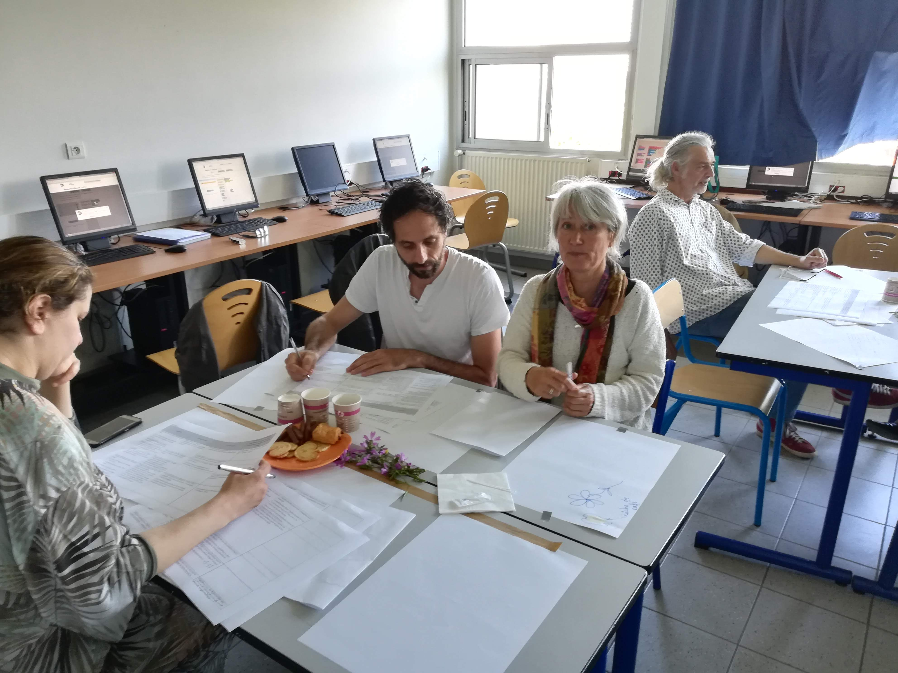

Groupe InEFLP
Innovation Expérimentation et Formation en Lycée Professionnel
Thèmes de travail, année 2017/2018
Présentation du groupe
groupe InEFLP
- InEFLP : Innovation, Expérimentation et Formation en Lycée Professionnel.
- 8 enseignants PLP Maths/Sciences (2017/2018)
groupe InEFLP - Centres d’intérêts du groupe
- Thème 1 - Formes scolaires innovantes
- Thème 2 - Algorithme
- Thème 3 - Micro-contrôleur
Formes scolaires innovantes
Moodle
C’est quoi ?
- plateforme d’apprentissage en ligne LMS
- depuis 2002
- équivalent à Chamilo, Claroline, M@gistère, Dokeos, Wims, etc.
Moodle
Ça sert à quoi ?
- diffuser du contenu
- suivre l’activité des élèves
- récupérer des productions
- automatiser certaines tâches comme la notation ou le feedback
Moodle
Quoi de nouveau alors ?
- intégration à l’ENT académique Atrium
- parc informatique : PC & tablettes
- accès à internet pour tous
- en classe
- hors classe
Moodle - Appropriation
- prise en main depuis septembre 2017
- création de ressources
Moodle - Analyse
Utile
- point d’entré unique pour diffuser et suivre l’activité
- élèves en activités, mobilisé, concentré
- évaluations formatives
- intégration de médias variés
- accès hors temps scolaire
Moodle - Analyse
Utilisable
- contraintes matérielles fortes
- parc informatique entièrement fonctionnel
- accès internet pour tous
- chronophage en amont
- outil riche et donc complexe
Moodle - Diffusion
http://url.univ-irem.fr/moodle
Moodle - Perspectives
Intégration de nouveaux membres :
- 2 enseignantes travaillant sur Chamilo
- réalisation et mutualisation de ressources (vidéos)
- recherche d’une structure, d’une organisation pertinente des activités/ressources
- 1 enseignante travaillant sur les compétences
- moodle et les 5 compétences en maths/sciences
- 2 enseignantes travaillant sur le travail par groupe
- articulation individus/numérique vs. groupes/îlots
Algorithmique
Stage Algo
- Stage mis en place par les IEN MSPC
- 2017-2018 :
- 3×2 journées pour les PLP MSPC
- 2×1 journée pour les PE enseignant en SEGPA
Informatique branchée et débranchée


Réflexions et travail par groupes
 
De la programmation par blocs


Des stagiaires perplexes


Des objets connectés


Micro:bit
Micro-contrôleur
Micro:Bit
C’est quoi ?
Une carte à l’initiative de la BBC pour équiper tous les collégiens anglais.
Un petit objet robuste programmable par un enfant de 10 ans
De grandes possibilités d’interactions avec l’environnement.
Micro:Bit
Pour quoi faire ?
- aborder la partie algorithmique du cycle4 (3ème Prépa-Pro)
- initier les élèves à la programmation en AP
- réaliser des projets incluant un objet programmable
- aborder des notions de mathématiques du programme de BAC Pro
Micro:Bit
Comment ?
STM32
à effacer plus tard…
diapo 3
Diapo 3.0
faire un clic droit juste en bas et la vidéo va se lancer…
Diapo 3.1
Une image

Diapo 3.2
Encore une image:

test fragments
I’ll fade in, then out
Appears last
Appears first
Appears second
grow
shrink
fade-out
fade-up (also down, left and right!)
visible only once
visible only once
visible only once
blue only once
highlight-red
highlight-green
highlight-blue